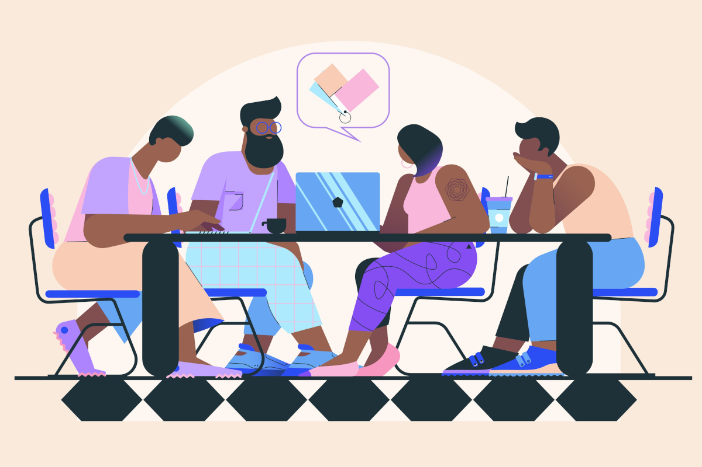

Welcome to The Student Study Collective
Student Study Collective is a relaxed community built for students who want a better way to stay focused, organized, and connected throughout the semester. Whether you are preparing for exams, finishing assignments, or building stronger study habits, the goal is to create a supportive environment where students can work alongside each other both online and in person. We believe studying becomes easier when students have structure, accountability, and a community that understands the challenges of student life.
Study Better Together

Studying alone can feel overwhelming, especially during busy parts of the semester when assignments and exams begin to pile up. Student Study Collective helps students stay motivated by creating a space where members can work together, share ideas, and encourage one another through difficult courses. Whether someone prefers quiet focus time or collaborative discussion, the group is designed to support a variety of learning styles.
Virtual Study Rooms
Our Discord community gives members a flexible way to stay connected even when they cannot meet on campus. Students can join virtual study rooms, ask quick questions, share resources, or simply work quietly alongside others for accountability. The online environment is designed to feel welcoming and low pressure while still helping students stay productive throughout the week.
Campus Meetups
Student Study Collective also organizes casual campus meetups where students can study together in a focused and supportive environment. These sessions give members a chance to meet classmates, work through assignments, and stay accountable during busy weeks. Whether someone needs help preparing for a test or simply wants a comfortable place to focus, campus meetups provide a welcoming space to make progress together.